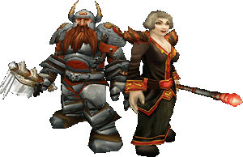
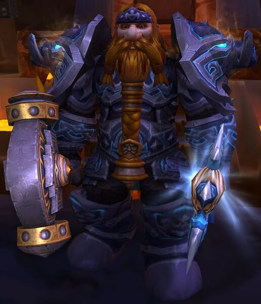
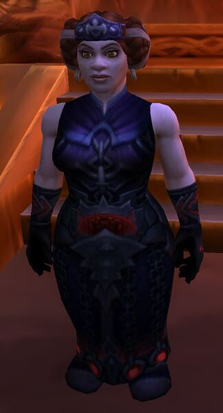
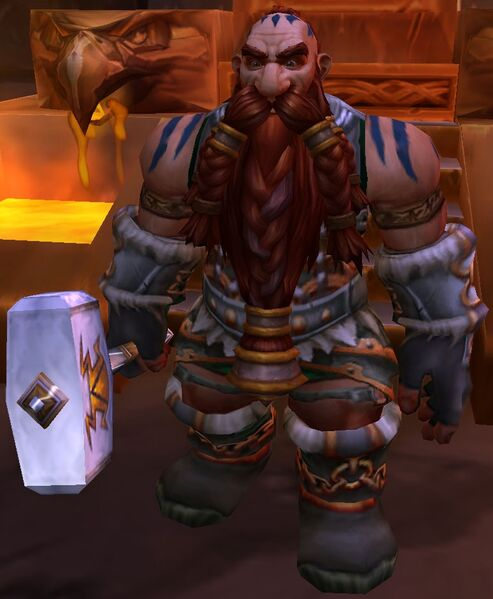

La ciudad es habitada principalmente por enanos y gnomos, estos últimos después de que su ciudad fuera invadida.

Concilio de los Tres Martillos
El reino de los Enanos es gobernada por tres enanos líderes que representan a cada clan de enanos:
Muradin Barbabronce

Líder del clan Barbabronce, hermano del antiguo rey y actual "mensajero de la tierra" Magni Barbabronce. Durante la Tercera Guerra se creyó muerto en Rasganorte, pero durante el retorno del rey exánime apareció como cabeza de las expediciones al asedio del trono de hielo. Igual que el resto del concilio, después de que su hermano Magni fuese petrificado con una maldición de ulduar, Muradin pasó a ser parte de los líderes del reino de Khaz Modan. Más información
Moira Thaurissan

Líder del clan Hierro negro, hija del antiguo rey Magni, esposa del antiguo líder del clan Hierro negro Dagran Thaurissan. Después de ser secuestrada por el clan Hierronegro, lugar donde le fue mostrado ese respeto que su padre no le tenía a la hora de tomar el trono del rey, regresaría a Forjaz a reclamar el trono después de la maldición de Magni, así pasó a ser parte del concilio en representación del clan Hierro Negro. Más Información
Falsad Martillosalvaje

Líder del clan Martillo salvaje: los enanos del norte, después de ser desterrados de su antigua capital "Grim Batol" por una maldición, los enanos martillo salvaje decidieron empezar a vivir una vida más rústica sin tener una capital bajo la montaña. Sin embargo, tras enterarse de la maldición de Magni, Falsad fue el encargado por parte del clan para representarlo en el concilio. Más Información
Puedes leer más sobre la historia del concilio aquí